SYNERGY Between CARC, EEE Dept. BRAC University and IDCOL
Power Conservation for Electrically Assisted Rickshaw
Vans with PV Support, Torque Sensor Paddle
A Infrastructure Development Company
Limited (IDCOL) is
working on a joint program with Control & Applications
Research Centre (CARC) of BRAC University on “Power
Conservation for Electrically Assisted Rickshaw Vans with
PV Support, Torque Sensor Paddle and the Solar Battery
Charging Station- A Complete Off-Grid Solution”. On
August 2, 2015, Mr. Mahmood Malik, the CEO of IDCOL
signed the agreement for collaboration. Dr. A. K. M. Abdul
Malek Azad, the CARC director and a professor in the
department of Electrical and Electronic Engineering was
also there on behalf of BRAC University.
The project comprises of the implementation and
observation of the 15 units of solar powered electric vans in
the rural areas of Bangladesh. IDCOL is a government
based organization promoting solar power usage in
Bangladesh.
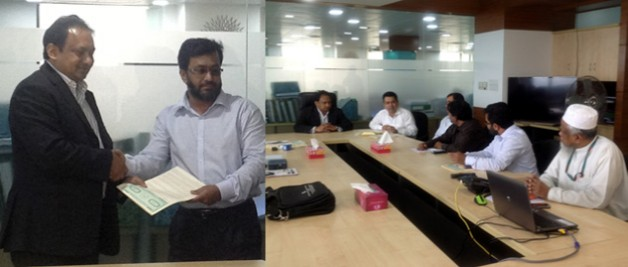
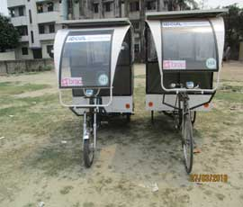
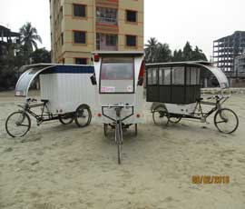
It is indeed a great achievement for CARC to get the responsibility of such project implementation. Dr. Azad and the responsible CARC key members, have worked diligently to make the project a success. All the units have been completely manufactured, field tests conducted and resigning have been also done based on the feedbacks of the community. Already the final project report submitted to IDCOL.
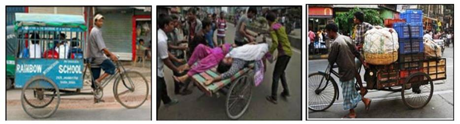
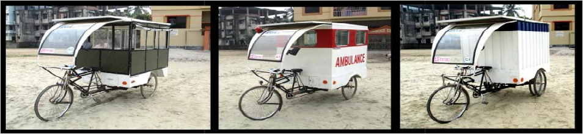
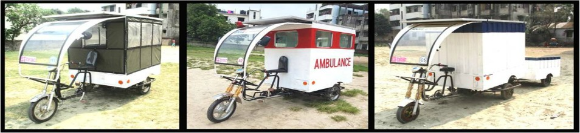
SYNERGY Between CARC, EEE Dept. BRAC University and BRAC HNPP
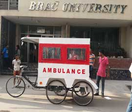
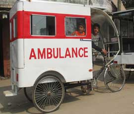
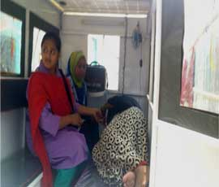
Solar Powered Vehicles in Savar
Control & Applications Research Centre (CARC) BRAC
University and BRAC Health is undergoing a
collaboration program on one of the on-going projects of
the centre, solar electric ambulance van. The ambulance
vans provided by CARC BRAC University through
IDCOL Project will be used by Health, Nutrition and
Population Programme of BRAC for their purpose. The
thesis students working on Solar ambulance Van has
already conducted field test and performance analysis.
Based on their result an improved design of ambulance
van has been made CARC is looking forward to and
effective and successful collaboration of the project.
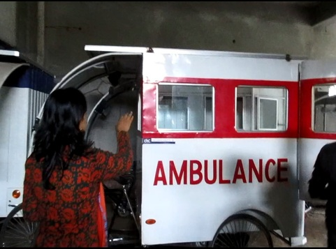
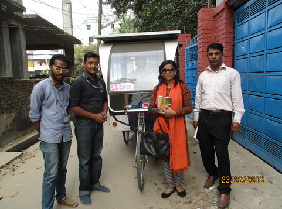
SYNERGY Between CARC, EEE Dept. BRAC University and CRP
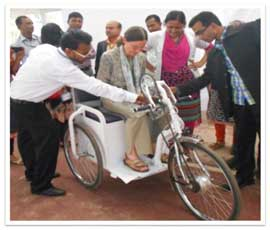
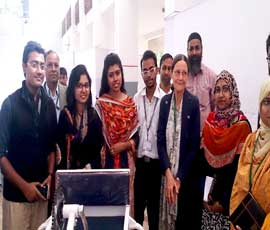
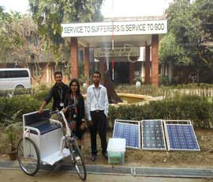
Project on Electric Wheelchair
On 13th December 2015 BRACU Research and Project
Engineers, Ataur Rahman, Jaber Al Rashid and Sheri Jahan
Chowdhury working under Control & Applications
Research Centre (CARC) went to Centre of Rehabilitation
for the Paralysed (CRP), Savar, for the delivery of the
Torque Sensor Assisted Electric Wheelchair with Solar
Charger Kit. Earlier there was a MoU signing where the
Executive Director of CRP Md. Shafiq-ul Islam, and the
Registrar of BRACU Muhammad Sahool Afzal agreed
upon a collaboration between the two institutions for the
development of the electric wheelchair. Dr. Valerie
Taylor, greatly appreciated the project. For inspection, she herself
rode the vehicles around the premises.
Industrial Partner Beevatech Ltd.
Since the signing of MoU in 2012 between CARC and Beevatech Ltd. Various projects have been involved
with
various research projects including Solar Battery Charging Station, Solar Powered Electric Vehicles,
Solar
powered Wheelchair and so on. The two organisations share the common goal of making the electric
vehicles
more available in the country removing the government ban. Several publications have been made in
this regard.
Beevatech has also assisted in the manufacture of the electric vans of the IDCOL projects.
Professional Affiliation with IEEE SIGHT USA
CARC is recognized in the international community as the CARG SIGHT (Bangladesh), an organisation funded by IEEE SIGHT USA for various research activities based on humanitarian projects. It provided the seed money required for research on the prototypes of the electric vans, human hauler and ambulance van namely, as well as the electric wheelchair. The successful manufacture of the prototypes of the electric vans have rendered CARC to launch pilot project in collaboration with IDCOL. CARC is looking forward to the same aftermath with all other projects with the goal of a sustainability as well as commercialization to benefit the community.
CARG project in collaboration with BEEVATECH LTD.
Furthering the industry-university links formed by BRAC University,
Control & Applications Research Group (CARG) has signed a memorandum
of understanding (MoU) between CARG and BEEVATECH LTD.
This is in concern with the Solar Battery Charging Station (SBCS) project
that CARG has undertaken with the purpose of designing a solar
powered battery charging station for electrically assisted power rickshaws
that BEEVATECH LTD has pioneered in Bangladesh.
BEEVATECH LTD, established in 2001, is the first professional electrically
assist rickshaw manufacturer in Bangladesh.
Electrically assisted power rickshaws have gained tremendous popularity
in Dhaka city due to their speed and low fare. But it has been claimed, by
the Ministries of Industries, as highly parasitic on the already overloaded
national electricity grid and thus mass usage of the rickshaw has not yet
been approved. In response to this situation, CARG has designed a solar
power battery charging station that frees the national grid from charging
the rickshaws and plans on initiating a 6 month long pilot project on their
design on the BRACU campus. Several publications have already been
made on the research done for this project. Reports of this pilot project
will be presented to the Ministry of Industries in an effort to gain the approval
for launching the rickshaws throughout the whole country.
Following the signing of the MOU in February between CARG and BEEVATECH LTD the Solar
Battery Charging Station (SBCS) is approved by BRAC University and fund has
been granted by the university.
The pilot
project, planned for 6 months, features implementing a 1kW solar powered station.
The project not only takes a significant load of the national grid but opens up a
way for CARG to build an industrial link with BEEVATECH LTD. The pilot project would
lead to implementation of the main Solar Battery Charging Station project in real
life scale to remote places in Bangladesh that would boost socio-economic condition
in the region by providing cheap electricity.
SYNERGY Program between EEE Department, BRAC University and BRAC Solar
Bangladesh is a country, where the people in the remote rural areas have to rely
on fuel basically kerosene based lighting to bring minimal lighting services in
their homes. The replacement of fuel based lighting can be done in a sustainable
way by using the existing and environmentally friendly renewable energy
sources like solar PV technology. This sustainable way of lighting many villages
in Bangladesh is expected to improve the general living standard of the
communities, contributing significantly to health, education. To provide electricity
in the rural areas BRAC Solar Energy Program is initiated under BRAC
foundation in 1998. In this study we emphasized on the performance of BRAC CARG (Control &
Applications
Research Group) undertook the first
synergy assignment in collaboration
with BRAC Solar and completed
the project within one week.
For the
purpose of this assignment, BRAC
Solar provided CARG with fourteen
solar panels from three different
companies, in order to determine performance of each panel. The power rating of these panels varied
from 40W to 85W. In order to complete this project, we created a testing
environment in our electronics lab. The testing environment consisted of a sun simulator, which is a
box was
wrapped with aluminium paper from inside. Instead of using sun light, bulbs
were installed inside the box. The sun simulator is used as a light source to
provide incident radiation (100,000 Lux) to excite the solar panel. Other
equipments such as a 2KW power supply, lux-meter, multi-meter etc. were
also used to complete the experiment. After taking the data for all panels, we
submitted a full scale report along with I-V characteristics curve, P-V characteristics
curve for each panel and also a comparative study of all the Solar
Panels. The project was successfully completed, and we hope that in future we
will have more opportunities to work in such projects with BRAC Solar.
Authorized testing laboratory of Solar Home System components for IDCOL
The Solar Energy Program launched by the Infrastructure Development
Company Ltd. (IDCOL) has the mission of fulfilling the basic electrical
needs of rural regions of Bangladesh through wide spreading the use of
Solar Home Systems (SHS) by the year 2020. IDCOL through discharging
social responsibility of the government, their Partner Organizations
(POs) through their access to grass root levels, private suppliers through
their dynamism and academics through their professionalism and research
have contributed in designing a system which has so far been
very well accepted by the target group.But due to the numerous components manufacturers (local and
foreign)
the resulting system contains components that vary greatly in all parameters varying the overall
quality from organization to organization
creating instability in the quality of the system. This instability in
product quality is increasing with the increase number of SHS installation
and thus the system efficiency, reliability and popularity is failing. CARG has been conducting
research on quality development and sustainable
utility of renewable energy by providing quality testing. It is
recognized testing authority
of SHS components for
IDCOL. The laboratories
of the Department of Electrical
and Electronic Engineering
and at BRAC University
are authorized to
perform tests on the SHS
components (PV module, charge controller, battery and lights) to determine
quality of a device. CARG has put together a team, head by Dr.
AKM Abdul Malek Azad, to develop procedures meeting the international
standards e.g. CIE, IEEE, etc. and perform tests of the SHS components.
Testing of SHS Components
PV Module
Quality assurance of the PV module is perhaps of the greatest importance
as it is the most expensive of all the components and as it is the
device that supplies the whole system with clean and green energy. PV
modules are tested for their performance, basically, in terms of maximum
power supply capability and the module's energy conversion efficiency.
The tests are conducted directly under the sun to ensure that the
proper testing conditions, as specified by IDCOL, are complied with. An automated system has been
developed by a research group under CARG for
measuring, logging and processing the data to provide the necessary results.
Characteristic graphs are then derived from the results to show the performance
of the PV module. The system has built in sensors that give the user a measurement
of the irradiation, temperature and air flow around the PV module which
is vital for monitoring the testing conditions.
CARG has been conducting research on quality development and sustainable
utility of renewable energy by providing quality testing. It is recognized testing
authority of SHS components for IDCOL. The laboratories of the Department
of Electrical and Electronic Engineering and at BRAC University are
authorized to perform tests on the SHS components (PV module, charge controller,
battery and lights) to determine quality of a device. CARG has put together
a team, head by Dr. AKM Abdul Malek Azad, to develop procedures
meeting the international standards e.g. CIE, IEEE, etc. and perform tests of
Charge Controllers
The charge controller is the brain and as well as the most error prone device
of the solar home system and development of controllers has been a
focus of CARG. It determines the flow of energy converted from the sun
to the battery and/or the loads and controls the charging-discharging cycles
of the battery. Connecting and disconnecting the battery at the
proper charge state is of absolute vitality for keeping the battery out of
harm's way.
Its inability to protect itself and from preventing any fire
due to short circuit in case the battery is connected is reverse or due to a
high current surge can prove fatal for the system user. Manufactured mostly locally,
charge controllers have the
highest instability in their
performance. Tests are performed
to check the above
parameter in very controlled
manner inside the laboratories
of BRAC University to
determine its quality. Specifications
for testing charge controller are supplied by IDCOL.
Batteries
Batteries are the most troublesome
of all the components as
improper use and maintenance
of it can not only cost a lot but
may cause health hazards.
It is
very important to accurately
determine a batteries nominal
capacity to know its operational limits. Determining its charging and
discharging thresholds is perhaps of utmost important as operating the
battery beyond those boundaries may cause permanent and serious
damage to the battery.Procedures to determine
each of these
parameters need to
be repeated numerous
charge-discharge
cycles to be performed
in different
patterns and conditions.
Testing of a battery could take days or weeks depending of the test
being performed. Although numerous research on battery characteristics
have been performed it is till today one of the most difficult components
of SHS to characterize and perform tests on.
Fluorescent and LED Lamps
Solar home systems have lamps specially designed for the purpose. Though these lights are low
powered compared to regular fluorescent
lamps, they can supply relatively high measure of lumen. The ballasts
driver circuits used in these lamps need to be highly efficient to prevent
power loss and at the same time have to be able to protect itself during faulty connections.
Tests are
also performed to confirm a
lamp's rated power consumption, efficiency and in case of
the Fluorescent lamps the ballast output wave shapes LED lights need the colour of their lamps
checked out as LED lamps
can emit light over a wide range of colour. These LED lights in particular
have very high life time, high efficacy (lumen per watt) and low
power consumption, which makes them very ideal for solar home systems.